Configuración Módulo de Compras

El usuario selecciona el módulo de Compras en el menú lateral de los módulos del sistema, ahí visualizara las opciones Configuración, Proveedores, Planes de compras, Requerimientos, Cotizaciones, Órdenes de compras/servicios, debiendo pulsar Configuración.
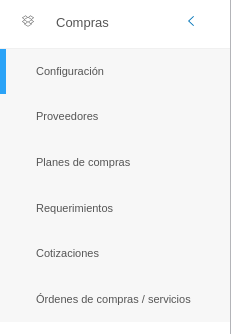
Registros Comunes
La sección de registros comunes es una herramienta de la Configuración del Módulo de Compras que permite al administrador o usuario con permisos especiales sobre el módulo de compras, ajustar el módulo a la organización usuaria a través de parámetros configurables. Los datos registrados en esta sección serán considerados en todas las funcionalidades del módulo.
El usuario ingresará a Registros Comunes, visualizando 8 iconos: Ramas de Proveedor, Objetos de Proveedor,Especialidades de Proveedor, Tipos de Proveedor, Documentos Requeridos, Modalidades de Compra, Servicios y Catálogo de productos y servicios.
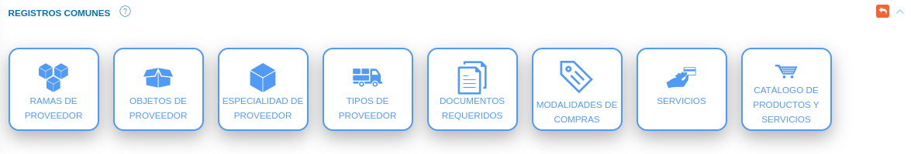
Ramas de Proveedor
A través de esta funcionalidad se gestiona información sobre las diferentes ramas a las que un proveedor puede estar asociado. Los registros realizados en esta sección corresponden a datos a incluir en la información básica de un proveedor en la gestión de proveedores del módulo de compras.
El usuario selecciona el icono Ramas de proveedor.
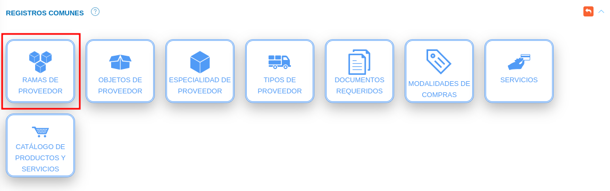
Registro de rama de proveedor
- Complete el formulario Rama de Proveedor. Asigne un nombre y descripción para la rama del proveedor a través de los campos Nombre y Descripción.
- Presione el botón
 Guardar para registrar los cambios efectuados.
Guardar para registrar los cambios efectuados. - Presione el botón
 Cancelar para limpiar datos del formulario.
Cancelar para limpiar datos del formulario. - Presione el botón
 Cerrar para cerrar el formulario.
Cerrar para cerrar el formulario.
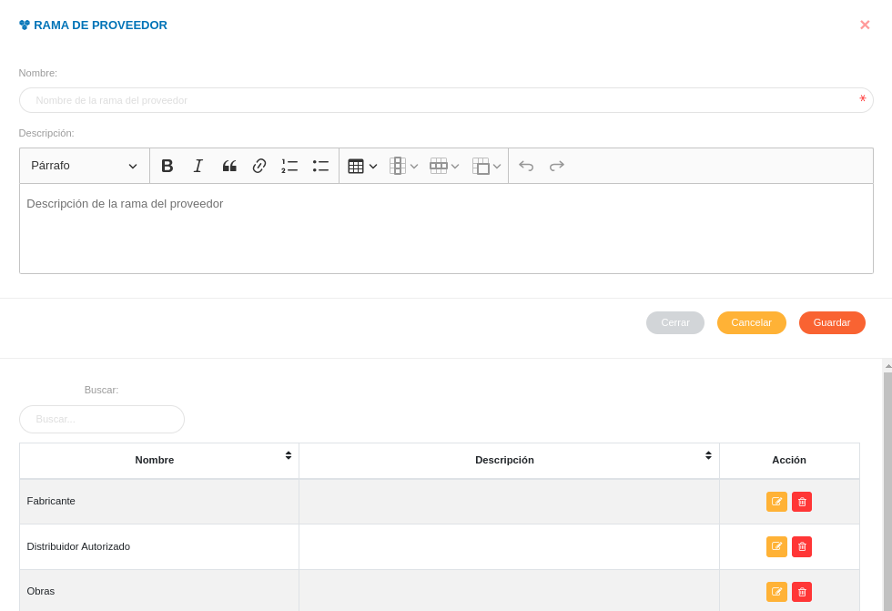
Gestión de registros de rama de proveedor
- Para editar un registro de Rama de Proveedor presione el botón Editar
 del registro seleccionado de la tabla Registros. A continuación complete el formulario Rama de proveedor y presione el botón Guardar para almacenar los cambios efectuados.
del registro seleccionado de la tabla Registros. A continuación complete el formulario Rama de proveedor y presione el botón Guardar para almacenar los cambios efectuados. - Para eliminar un registro de Rama de proveedor presione el botón Eliminar
 del registro seleccionado de la tabla Registros.
del registro seleccionado de la tabla Registros.
Objetos de Proveedor
A través de esta funcionalidad se gestiona información sobre los diferentes objetos asociados al servicio que presta un proveedor. Los registros realizados en esta sección corresponden a datos a incluir en la información básica de los proveedores.
El usuario selecciona el icono Objetos de proveedor.
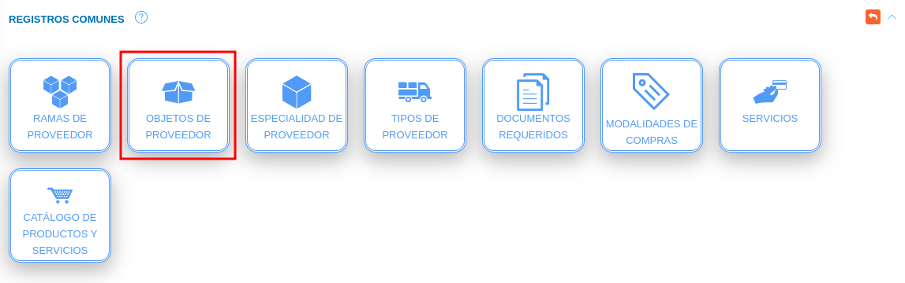
Registro de objetos de proveedor
- Complete el formulario Objetos de Proveedor. Asigne un tipo, nombre y descripción para el objeto del proveedor a través de los campos Tipo, Nombre y Descripción.
- Presione el botón Guardar para registrar los cambios efectuados.
- Presione el botón Cancelar para limpiar datos del formulario.
- Presione el botón Cerrar para cerrar el formulario.
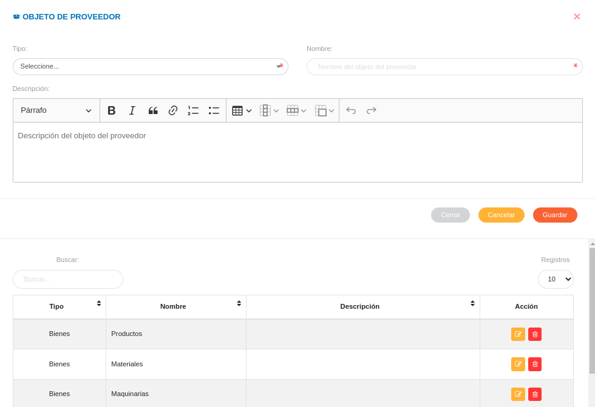
Gestión de registros de objetos de proveedor
- Para editar un registro de Objetos de Proveedor presione el botón Editar del registro seleccionado de la tabla Registros. A continuación complete el formulario Objetos de proveedor y presione el botón Guardar para almacenar los cambios efectuados.
- Para eliminar un registro de Objetos de proveedor presione el botón Eliminar del registro seleccionado de la tabla Registros.
Especialidad de Proveedor
A través de esta funcionalidad se gestiona información sobre las diferentes especialidades a las que un proveedor puede estar asociado. Los registros realizados en esta sección corresponden a datos a incluir en la información básica de un proveedor en la gestión de proveedores del módulo de compras.
El usuario selecciona el icono Especialidad de proveedor.
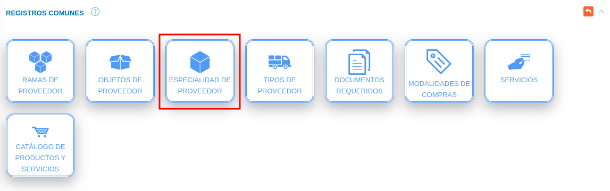
Registro de especialidad de proveedor
- Complete el formulario Especialidad de Proveedor. Asigne un nombre y descripción para la especialidad del proveedor a través de los campos Nombre y Descripción.
- Presione el botón Guardar para registrar los cambios efectuados.
- Presione el botón Cancelar para limpiar datos del formulario.
- Presione el botón Cerrar para cerrar el formulario.
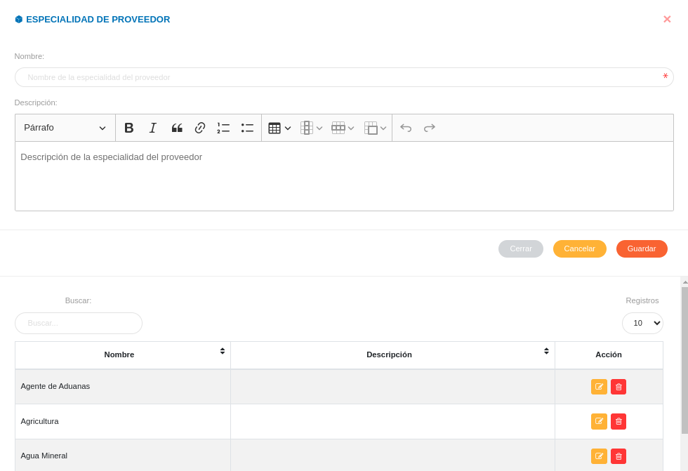
Gestión de registros de especialidad de proveedor
- Para editar un registro de Especialidad de Proveedor presione el botón Editar del registro seleccionado de la tabla Registros. A continuación complete el formulario Especialidad de proveedor y presione el botón Guardar para almacenar los cambios efectuados.
- Para eliminar un registro de Especialidad de proveedor presione el botón Eliminar del registro seleccionado de la tabla Registros.
Tipos de Proveedor
A través de esta funcionalidad se gestiona información sobre los diferentes tipos de proveedores a gestionar. Los registros realizados en esta sección corresponden a datos a incluir en la información básica de un proveedor en la gestión de proveedores del módulo de compras.
El usuario selecciona el icono Tipos de proveedor.
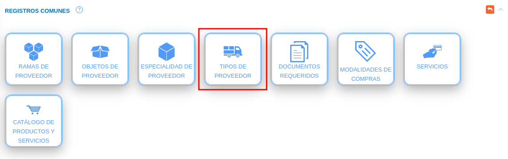
Registro de tipo de proveedor
- Complete el formulario Tipo de Proveedor. Asigne un nombre para el tipo del proveedor a través del campo Nombre.
- Presione el botón Guardar para registrar los cambios efectuados.
- Presione el botón Cancelar para limpiar datos del formulario.
- Presione el botón Cerrar para cerrar el formulario.
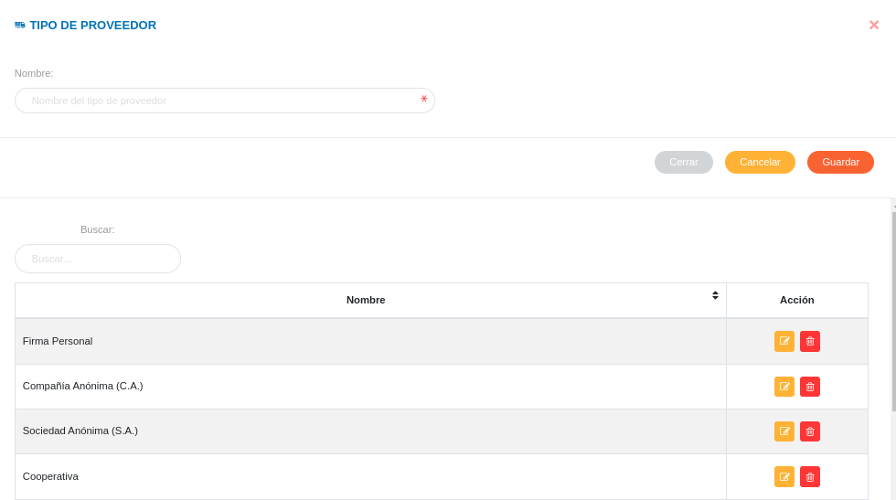
Gestión de registros de tipo de proveedor
- Para editar un registro de tipo de Proveedor presione el botón Editar del registro seleccionado de la tabla Registros. A continuación complete el formulario tipo de proveedor y presione el botón Guardar para almacenar los cambios efectuados.
- Para eliminar un registro de tipo de proveedor presione el botón Eliminar del registro seleccionado de la tabla Registros.
Documentos Requeridos
A través de esta funcionalidad se gestionan los tipos de documentos a consignar o solicitar para registro de proveedores y la gestión de ordenes de compras. Los registros realizados en esta sección corresponden a campos habilitados en los formularios de registro en la gestión de proveedores y gestión de orden de compras del módulo de compras.
El usuario selecciona el icono Documentos Requeridos.
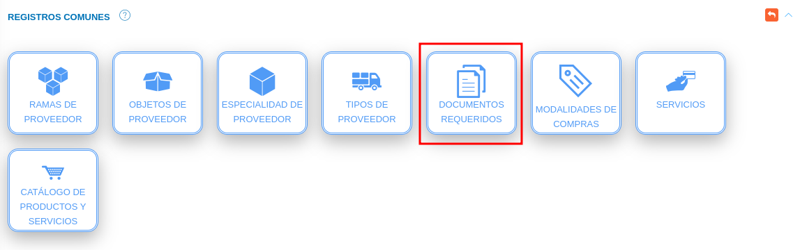
Registro de documentos requeridos
- Complete el formulario Documentos Requeridos. Asigne un nombre, tipo y descripción para el documento requerido a través de los campos Nombre, Tipo y Descripción.
- Presione el botón Guardar para registrar los cambios efectuados.
- Presione el botón Cancelar para limpiar datos del formulario.
- Presione el botón Cerrar para cerrar el formulario.
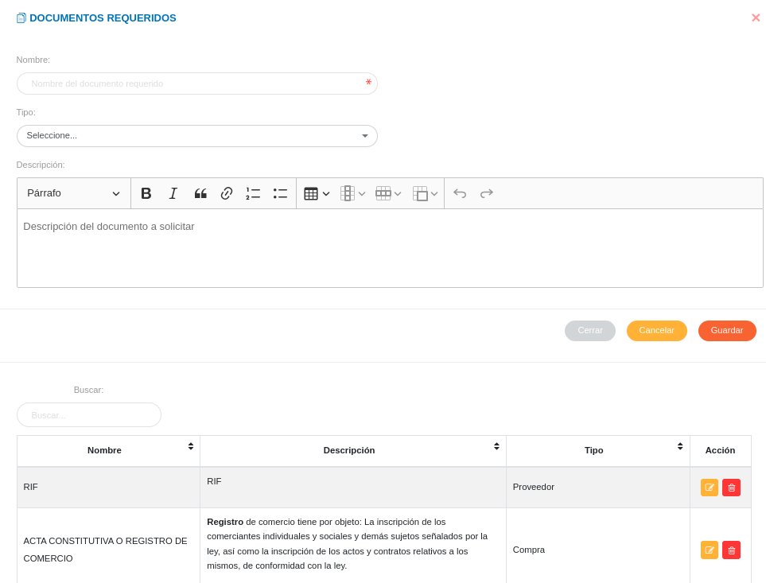
Gestión de registros de documentos requeridos
- Para editar un registro de documentos requeridos presione el botón Editar del registro seleccionado de la tabla Registros. A continuación complete el formulario documentos requeridos y presione el botón Guardar para almacenar los cambios efectuados.
- Para eliminar un registro de documentos requeridos presione el botón Eliminar del registro seleccionado de la tabla Registros.
Modalidades de compra
A través de esta funcionalidad se gestionan las diferentes modalidades de compras a emplear por la organización. Cada modalidad incluye un listado de documentos requeridos que pueden ser seleccionados. Los registros realizados en esta sección corresponden a campos habilitados en el formulario registro de la gestión de orden de compras del módulo de compras
El usuario selecciona el icono Modalidades de Compras.
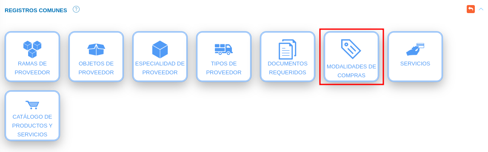
Registro de modalidades de compra
- Complete el formulario Modalidades de Compra. Asigne un nombre y descripción para la modalidad de compra a través de los campos Nombre y Descripción, seguidamente seleccione los documentos asociados a esa modalidad de compra.
- Presione el botón Guardar para registrar los cambios efectuados.
- Presione el botón Cancelar para limpiar datos del formulario.
- Presione el botón Cerrar para cerrar el formulario.
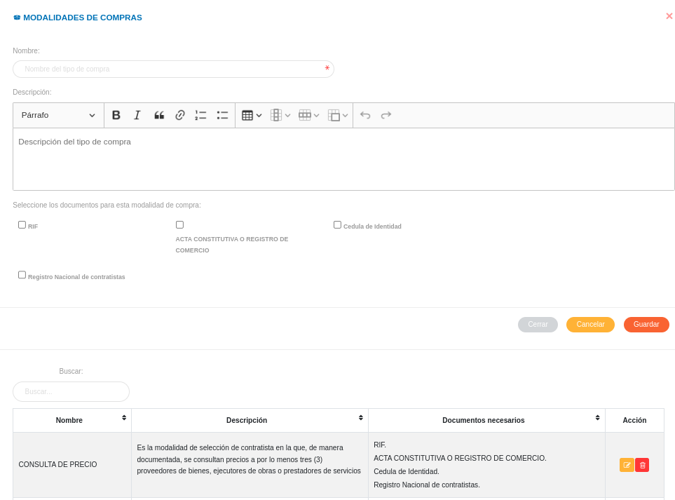
Gestión de registros de modalidades de compras
- Para editar un registro de modalidades de compras presione el botón Editar del registro seleccionado de la tabla Registros. A continuación complete el formulario modalidades de compras y presione el botón Guardar para almacenar los cambios efectuados.
- Para eliminar un registro de modalidades de compras presione el botón Eliminar del registro seleccionado de la tabla Registros.
Servicios
A través de esta funcionalidad se gestionan los diferentes servicios a emplear por la organización. Los registros realizados en esta sección corresponden a datos a incluir en la información básica de servicios en el módulo de compras.
El usuario selecciona el icono Servicios.
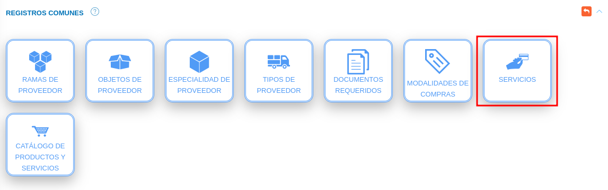
Registro de servicios
- Complete el formulario Servicios. Asigne un nombre y descripción para el servicio a través de los campos Nombre y Descripción.
- Presione el botón Guardar para registrar los cambios efectuados.
- Presione el botón Cancelar para limpiar datos del formulario.
- Presione el botón Cerrar para cerrar el formulario.
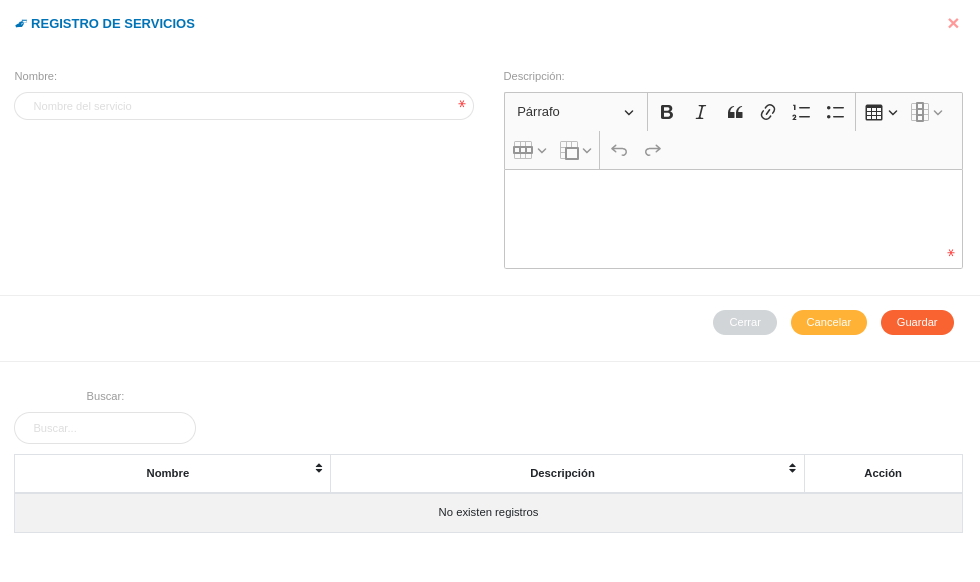
Gestión de registros de servicios
- Para editar un registro de Servicios presione el botón Editar del registro seleccionado de la tabla Registros. A continuación complete el formulario Servicios y presione el botón Guardar para almacenar los cambios efectuados.
- Para eliminar un registro de Servicios presione el botón Eliminar del registro seleccionado de la tabla Registros.
Catálogo de productos y servicios
A través de esta funcionalidad se gestionan los diferentes productos y servicios a emplear por la organización. Los registros realizados en esta sección corresponden a datos a incluir en la información básica de productos y servicios en el módulo de compras.
El usuario selecciona el icono Catálogo de productos y servicios.
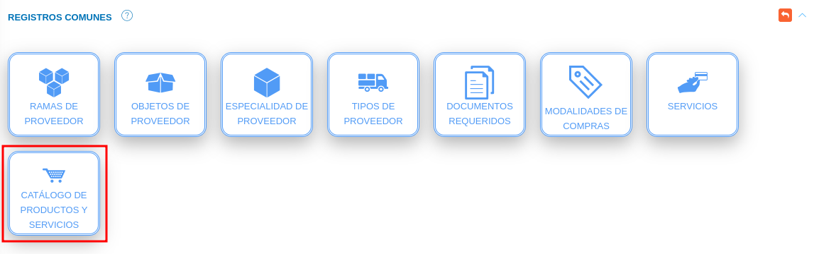
Registro de productos y servicios
- Complete el formulario Catálogo de Productos y Servicios. Asigne un nombre y descripción para el servicio a través de los campos Nombre y Descripción.
- Presione el botón Guardar para registrar los cambios efectuados.
- Presione el botón Cancelar para limpiar datos del formulario.
- Presione el botón Cerrar para cerrar el formulario.
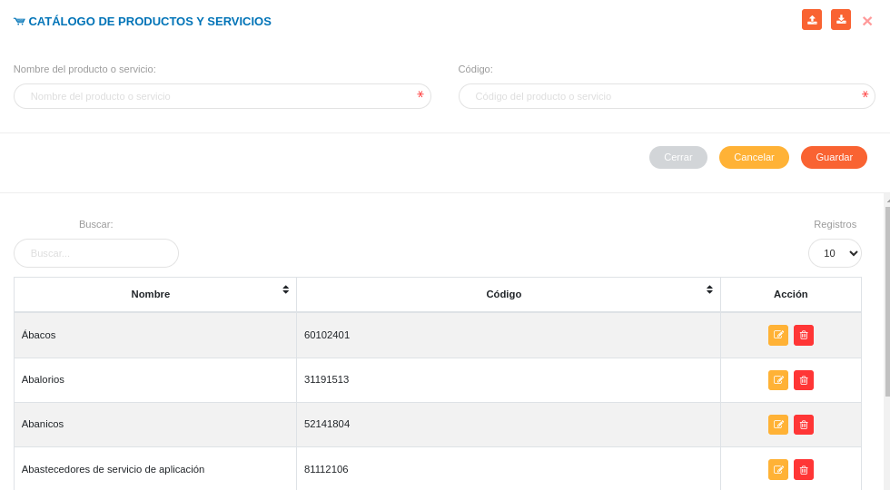
Gestión de registros de productos y servicios
- Para editar un registro de Catálogo de Productos y Servicios presione el botón Editar del registro seleccionado de la tabla Registros. A continuación complete el formulario Catálogo de Productos y Servicios y presione el botón Guardar para almacenar los cambios efectuados.
- Para eliminar un registro de Productos y Servicios presione el botón Eliminar del registro seleccionado de la tabla Registros.
- Para subir los registros mediante hoja de cálculo presione el botón Cargar en el formulario de Catálogo de Productos y Servicios.
- Para descargar el documento con información de los registros presione el botón Descargar en el formulario de Catálogo de Productos y Servicios.